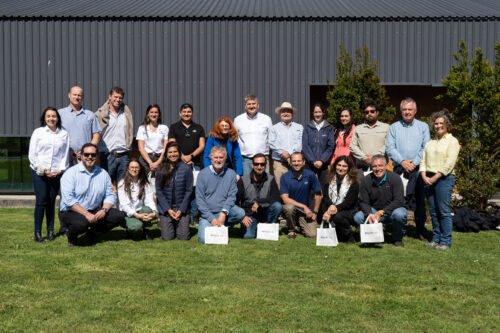

Del campo al salmón: la Cooperativa Agrícola de Granos de Osorno conoció la cadena de valor de Multi XVer noticiaUI kit · Rediseño 2026
Corporativo liviano
Kit de referencia de la Propuesta A: los tokens del sistema (color, tipografía, espaciado, radio, bordes y movimiento) y un ejemplo de cada componente. Las reglas de uso y la adaptación a mobile están en design-system/ui-kit.md y design-system/responsive.md.
Última actualización: 21 de octubre de 2026.
01
Color
En componentes se usan solo los tokens semánticos. Coral 600 para todo texto coral sobre fondos claros; Coral 500 solo para rellenos y gráficos sobre claro, y para texto sobre Navy 950.
Fondos
- Página--color-bg-page
- Suave · Offwhite 50--color-bg-subtle
- Atenuado--color-bg-muted
- Oscuro · Navy 950--color-bg-inverse
- Marca · Navy 900--color-bg-brand
- Marca hover · Navy 600--color-bg-brand-hover
- Marca suave · Navy 100--color-bg-brand-soft
- Acento · Coral 400--color-bg-accent
- Acento hover · Coral 500--color-bg-accent-hover
- Ilustración · Coral 100--color-bg-illustration
Texto y bordes
- Principal · Navy 900--color-text-primary
- Secundario · Ink 600--color-text-secondary
- Atenuado · Ink 400 (solo "Ver PDF", excepción AA)--color-text-quiet
- Marca y enlaces--color-text-brand
- Acento · Coral 600--color-text-accent
- Positivo · Verde 600--color-text-success
- Borde y divisor--color-border-default
Contraste verificado (WCAG 2.1 AA)
- Coral 600 sobre blanco4,9:1 · etiquetas y badges
- Navy 600 sobre crema7,1:1 · acento sobre crema (sin coral)
- 6,7:1 · botón de acento
- Navy 300 sobre Navy 95010,2:1 · acento sobre azul (sin coral)
02
Tipografía
Sora (300 y 400; 200 y 600 solo en el Display destacado) para títulos y cifras; Manrope (400 a 700) para cuerpo e interfaz. En mobile, display, títulos y cifras bajan de tamaño (propuesta por validar).
Del sur de Chile al mundo
Your salmon solution partner
Información para inversionistas
Resultados trimestrales
Publicación de resultados Q3 2026
+3.500 $ 152,40 2026
30+
Bajadas y textos introductorios de cada página o sección.
Texto corrido. Multi X es una compañía salmonera con integración vertical, desde la ova hasta la venta en más de 30 mercados.
14 oct 2026 · PDF 320 KB
Próximo evento
Citación a Junta Extraordinaria · Correo electrónico
· · Descargar
03
Espaciado, radio y bordes
Valores de css/tokens.css; la columna del medio se lee del archivo en vivo. Anchos de columnas y bloques no tienen token: se usan proporciones del contenedor (fr, porcentajes).
Espaciado
--space-2--space-4--space-6--space-8--space-12--space-16--space-20--space-24--space-32--space-40--space-48--space-64--space-80--space-96--space-128
Radio
--radius-xs--radius-sm--radius-md--radius-lg--radius-xl--radius-full
Bordes y sombra
--border-thin--border-medium--border-focus--border-indicator--shadow-card
Layout y tamaños
--layout-content-width--layout-gutter--layout-section-gap--touch-target--icon-sm--icon-md--icon-lg--size-event-date--size-cert-logo
Breakpoints: 768 (tablet) y 1024 (desktop); estilos base para mobile. El margen lateral y la separación entre secciones se ajustan solos entre mobile y desktop.
04
Movimiento
Duraciones y curvas de css/tokens.css; pasa el mouse por una fila para ver la duración. El catálogo de patrones (Base en todo el sitio, Firma solo donde se indica) está en design-system/motion.md. Con movimiento reducido las duraciones quedan en 0.
Duraciones
--duration-fast--duration-base--duration-slow--duration-reveal--duration-counter--duration-stagger
Curvas y desplazamiento
--easing-standard--easing-out--motion-reveal-distance
05
Botones
El acento usa Coral 400 con texto Ink 900 (6,7:1) y en hover pasa al Coral 500 original (5,5:1). Sobre fondo oscuro se usa la misma versión rellena o el contorno coral (5,6:1). El texto blanco sobre coral no se usa en botones.
Ver resultadosPrimario
Ver resultadosPrimario · hover
Ver calendarioSecundario
Ver calendarioSecundario · hover
Contactar a ventasAcento (conversión)
Contactar a ventasAcento · hover
Deshabilitado
Ver todos los informesTerciario / enlace
Ver todos los informesTerciario · hover
Descargar memoriaCon ícono · descarga
Ir al sitio(abre en una pestaña nueva)Enlace externo
AgregarPequeño
Sobre fondo oscuro o imagen
Grupo de botones · mobile apilado a ancho completo
06
Formularios
Campos con etiqueta visible siempre (no solo placeholder) y zona táctil mínima de 44 px. En mobile, una columna y teclado según el tipo de campo.
Estado foco
08
Componentes de contenido
Un ejemplo de cada componente; las secciones de cada página no se repiten aquí. Sin cajas: se agrupa con líneas delgadas y espaciado.
Encabezado de sección (.section-head)
Un formato para cada mercado
Título 2 + bajada opcional (máx. 68 % del contenedor en desktop). Sin etiqueta. [contenido por definir]
Cifras (.stats; .stats--accent las pasa a coral)
- 34años de trayectoria
- +3.500colaboradores
- +30países de destino
- 100%integración vertical
Cifras en tres (.stats--three)
- 2,9Salmón de cultivo
- 5,9Cerdo
- 30Vacuno
Estrategia ABC (.abc + [data-tabs][data-tabs-static])
A · Animal
Descripción del pilar. [contenido por definir]
- 0Meta con su cifra. [contenido por definir]
- X %Otra meta. [contenido por definir]
B · Biósfera
Descripción del pilar. [contenido por definir]
- +10Meta con su cifra. [contenido por definir]
C · Comunidades
Descripción del pilar. [contenido por definir]
- 160Meta con su cifra. [contenido por definir]
Formulario por pasos (.form-steps, .form-step), casillas en grilla (.check-grid) y mensaje enviado (.prov-sent): Portal Proveedores
- 1Tu empresa
- 2Persona de contacto
- 3Servicios y capacidades
Paso 2 de 3 · Persona de contacto
Mensaje enviado
Gracias por escribirnos
Te responderemos al correo que indicaste.
Buscador del sitio: campo (.search-form), chips de tipo (.search-types), resultados (.job-row.search-hit con .search-mark; documento: .search-hit--doc) y paginación con salto (.pagination__gap)
Noticias: nota con fecha (.news-item__date), sin foto (.news-item__media--empty), grilla (.news-list--grid), paginación (.pagination en .news-pager) y compartir (.news-share)
Multi X informa término de contingencia en centros Taraba 7 y 8, en la Región de MagallanesVer noticia [foto por definir]39 profesionales de alto desempeño finalizan con éxito el programa de liderazgo femenino en Multi XVer noticia
Compartir
Ofertas laborales: chips de un valor (.job-chips), fila de oferta (.job-row) , datos de la oferta (.job-head__facts) y franja de postulación (.job-bar, fija bajo el header en el detalle)
- Área
- Farming
- Ubicación
- Puerto Montt, Los Lagos
- Código
- ID 11452
Postulación enviada (.apply-done; en la página reemplaza cabecera, franja y formulario y ocupa el alto de la pantalla bajo el header)
Postulación enviada
¡Gracias por postular!
Recibimos tu postulación a Técnico de Mantención Agua Dulce (ID 11452). Te contactaremos si tu perfil avanza en el proceso de selección.
Adjuntar archivo (.file-field)
Currículum
Formato PDF, máximo 2 MB.
Barra de filtros
Filtros activos:
· 14 documentos
Ver más ([data-reveal-more]: muestra u oculta el resto de una lista)
Memoria integrada 2024
Ver PDF Memoria integrada 2024 (abre en una pestaña nueva)Descargar Memoria integrada 2024
Memoria integrada 2023
Ver PDF Memoria integrada 2023 (abre en una pestaña nueva)Descargar Memoria integrada 2023
Listado de documentos por año (.doc-years + .doc-row; sobre 5 años, el resto tras "Ver años anteriores". Aquí con data-years-limit="2" para mostrarlo)
Citación a Junta Extraordinaria de Accionistas
Hecho esencial
Ver PDF Citación a Junta Extraordinaria de Accionistas (abre en una pestaña nueva)Descargar Citación a Junta Extraordinaria de Accionistas
Estados financieros consolidados Q2 2026
EEFF
Ver PDF Estados financieros consolidados Q2 2026 (abre en una pestaña nueva)Descargar Estados financieros consolidados Q2 2026
Análisis razonado Q2 2026
Análisis
Ver PDF Análisis razonado Q2 2026 (abre en una pestaña nueva)Descargar Análisis razonado Q2 2026
Presentación de resultados Q2 2026
Presentación
Ver PDF Presentación de resultados Q2 2026 (abre en una pestaña nueva)Descargar Presentación de resultados Q2 2026
Memoria anual integrada 2025
Memoria
Ver PDF Memoria anual integrada 2025 (abre en una pestaña nueva)Descargar Memoria anual integrada 2025
Memoria anual integrada 2024
Memoria
Ver PDF Memoria anual integrada 2024 (abre en una pestaña nueva)Descargar Memoria anual integrada 2024
Destacados de Inversionistas (.ir-highlights: último reporte y próximo evento)
Último reporte
Próximo evento
Lista con fecha (.date-list: documentos y eventos con la misma estructura; con data-show-more muestra N y "Ver más" agrega los N siguientes. Aquí N = 1 para mostrarlo)
Lista con fecha para agendar (.date-item--agenda: próximos eventos; la fila no es enlace y lleva el tipo de evento y .add-calendar)
-
Publicación Estados Financieros IFRS Q3 2026
Evento y agendar (.ir-event + .add-calendar: para la futura página de Calendario; los accesos de Inversionistas ya no lo usan)
Publicación de resultados Q3 2026
Conferencia telefónica 13 nov · 11:00 h (CLT) [contenido por definir]
Personas (.people + .person; la tarjeta abre el perfil completo en .person-dialog)
-
[foto por definir] Nombre Apellido Cargo (sin perfil)
Contacto IR (<ir-contact>) y alertas al inversionista (<ir-alerts>: bloque crema a todo el ancho con "Suscribir")
Precio de la acción (.stock: detalle del precio sin caja, variaciones .change--up / .change--down y gráfico MULTIX vs. IPSA con períodos en chips)
MULTIX · Bolsa de Santiago
$ 498,50CLP por acción
- Variación diaria
- +1,24 % (alza)
- Variación YTD
- −3,85 % (baja)
Precio con retraso de 15 min · 10/11/2026 16:00 CLT [contenido por definir]
Rango 52 semanas$ 431,20 – $ 562,80
Tabla con próximo pago y pie (.data-table + .badge--brand "Próximo" + .table-foot)
Tienen derecho al dividendo los accionistas inscritos en el registro a la fecha límite. Contenido de ejemplo [contenido por definir].
Tabla de datos (.data-table; con más de 3 columnas, .data-table--cards: en mobile cada fila pasa a tarjeta)
| N° | Tipo | Ejercicio | Fecha de pago | US$ por acción |
|---|---|---|---|---|
| 24 | Provisorio | 2026 | 18 sep 2026 | 0,0085 |
| 23 | Definitivo | 2025 | 20 may 2026 | 0,0142 |
Íconos representativos (.icon--xl, 40 px)
Agua Dulce · Agua Mar · Plantas de Proceso · Gestión y Soporte
Lista de valores (.value-list; .value-list--row la pone en fila: Trabaja con Nosotros)
-
01
Pasión por lo que hacemos
Cultivamos el cariño por nuestro trabajo en cada etapa. [contenido por definir]
-
02
Integridad
Actuamos con transparencia y respeto. [contenido por definir]
Pilares con foto (.pillars) y cifra total (.figure-total)
-
[foto por definir]
Apasionados por un espíritu de excelencia
Comprometidos a hacer las cosas bien y a buscar niveles de excelencia en todo lo que hacemos.
-
[foto por definir]
Movilizados por la innovación
Comprometidos a mantener un espíritu pionero e innovador.
+6.000
colaboradores en total
Preguntas frecuentes (.faq)
-
En Gobernanza › Junta de accionistas, dentro de los documentos relacionados de cada año.
-
Los resultados del tercer trimestre se publican el 12 de noviembre de 2026. Revisa el calendario completo en Agenda. [contenido por definir]
-
Sí, todas las políticas corporativas tienen versión en inglés. [contenido por definir]
09
Composición y fondos de sección
Un ejemplo de composición (foto en círculo) y los fondos de sección con sus transiciones. Cada página arma sus propias composiciones a partir de estas piezas.
Encabezado de página en crema con foto y sub-menú de sección debajo (.page-intro + .page-tabs.is-bar: Centro de Resultados y Gobernanza)
Título de la página
Bajada de la página en una o dos líneas. [contenido por definir]

Integración vertical: pasos a la vista con video del activo y avance automático ([data-journey])
Del cultivo a la mesa
01. Genética y ovas
Programa genético propio para peces sanos y de crecimiento eficiente. [contenido por definir]
02. Agua dulce
Pisciculturas con recirculación donde crecen alevines y smolts. [contenido por definir]
03. Centros de mar
Engorda en las regiones de Los Lagos, Aysén y Magallanes. [contenido por definir]
04. Cosecha
Cosecha planificada según la demanda de cada mercado. [contenido por definir]
05. Proceso
Plantas propias de proceso primario, secundario y ahumado. [contenido por definir]
06. Distribución
Despacho aéreo y marítimo a clientes en más de 30 países. [contenido por definir]
Foto en círculo, con video en hover ([data-media-circle])
Título de la sección
La foto recortada calza con el círculo y la figura sobresale (variante --cutout). Con hover crece y se abre al video; la foto se desvanece y aparece al centro el botón de la sección ("Ver productos"). [contenido por definir]
 Ver productos
Ver productos
Fondo crema con borde curvo (Horizonte) (.section--curve-bottom[data-section-curve]: el arco se aplana con el scroll)
Sección Offwhite que termina en arco sobre la siguiente.